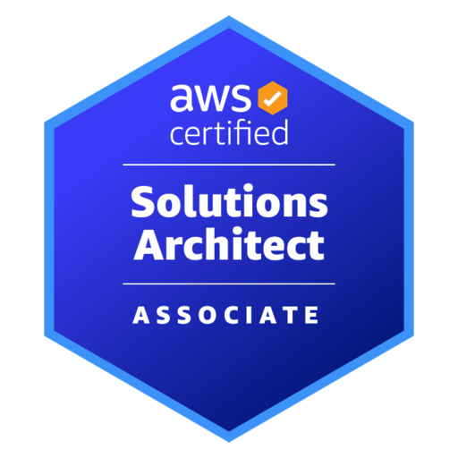

Certifications
Azure Data Fundamentals

Azure Data Engineering Associate

AWS Cloud Practitioner

AWS Solutions Architect Associate
Airflow Fundamentals
I am a purpose-driven Data Engineer passionate about solving complex problems and creating innovative solutions that make a real impact. My expertise lies in data pipelines, data architecture, and especially in cloud system architecture for data solutions. I thrive on designing scalable, efficient, and resilient data systems that drive meaningful insights. Proudly South African, I bring both technical expertise and a deep ambition as well as creativity and learning. Beyond data, I enjoy reading philosophy, cooking Thai food, and expressing myself through poetry. For me, technology isn’t just about data—it's about building solutions that are purpose-driven and solve real-world problems.
With two years of experience across multiple domains, I have established a strong foundation as a Data Scientist, Data Engineer, and Data Engineering Facilitator for a leading academy - Explore AI and the subsequently ALX Africa. My expertise spans end-to-end data pipelines, data architecture design, and the development of groundbreaking, real-time solutions that drive business value. I worked in various domains including telecommunications where I worked on creating a tool to detect mobile signal strength in real-time, developed a pipe leak detection system using acoustic logger audio files for the water and utilities industry, and mentored a team of interns that built a predictive models to optimize lead conversion in the insurance domain. My work demonstrates a commitment to innovation and impactful data-driven problem-solving across diverse industries.
Azure Data Fundamentals
Azure Data Engineering Associate
AWS Cloud Practitioner
AWS Solutions Architect Associate
Airflow Fundamentals
Here are some of the projects I've worked on. Each project showcases my skills in data engineering and my ability to solve complex problems.
Feel free to reach out to me for collaborations or just to say Hi. I'm always open to new opportunities and challenges!
Here are some of the skills I've mastered over the years: